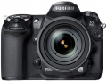

器材库 > APS及其以下画幅可换镜头数码相机 > FinePix S5 Pro

规格总览
产品类型
APS画幅可换镜头数码相机
发布日期
2006-09-25
厂家推荐价格
260,000.00 （日元）
停产
是
影像规格
影像传感器
Super CCD
影像传感器尺寸
23.0 × 15.5mm
有效像素
1234万
色彩空间
sRGB, Adobe RGB
最大解像度
4256×2848
静态图像尺寸
4256×2848；3024×2016；2304×1536
静态图像格式
JPEG, RAW
镜头和对焦
镜头卡口
Nikon AF
兼容镜头
DX型AF镜头、D/G型AF镜头（IX除外）：全部功能可用；其它AF尼克尔镜头（F3AF除外）、AI-P尼克尔镜头：可支持除3D彩色矩阵侧光Ⅱ、自动对焦（仅AI-P镜头）和3D针对数码SLR的多个传感器的均衡补充闪光外的全部功能；不带CPU的镜头：只能在A光圈优先和M手动模式使用
对焦系统类型
TTL相位检测
对焦点
正常区域：11个区域；可选择单区域或组；宽区域：可从7个区域中选择对焦区域
对焦模式
1）单区域自动对焦 2）动态区域自动对焦 3）组动态自动对焦 4）采用最近拍摄对象优先的动态区域自动对焦
曝光控制
测光系统
3D彩色矩阵测光Ⅱ
测光模式
中央重点测光, 点测光
曝光模式
P（程序自动曝光）, A（光圈优先自动曝光）, S（快门速度优先自动曝光）, M（手动测光曝光）
快门类型
电子控制，纵走式，焦平面快门
快门速度
30秒至1/8000秒（P/A/S/M），B门（M档），同步速度最大1/250秒
曝光补偿
±5EV以1/3或1/2EV级调整
ISO感光度
100, 200, 400, 800, 1600, 3200
白平衡
日光, 多云, 闪光灯, 色温调节, 阴天, 荧光灯, 自定义, 自动
闪光灯
内置闪光灯
弹出式
闪光指数
GN 12 (ISO 100)
取景器/显示屏
取景器
眼平五棱取景器, 固定
取景范围
95%
取景放大倍率
0.94倍
LCD类型
低温多晶硅TFT LCD
LCD尺寸
2.5英寸
LCD像素
23.5万
文件输入/输出
存储卡
CF
数据接口
USB2.0
视频/音频接口
Video 输出 (NTSC/PAL)
电源
电池
可充电锂电池
续航能力
约400张
外接电源
AC电源适配器
机身规格
颜色
黑色
尺寸
147 ×113 ×74mm
重量
830g
其它
附件
可充电电池NP-150，电池充电器BC-150，肩带，机身盖，目镜盖，LCD显示屏盖，USB电缆，视频电缆，热靴盖，同步端口盖，遥控端口盖，软件光盘
备注
内置5种模拟胶片模式
qichengli2017-06-16 20:274.56 分
操作性 4.50功能性 4.50美观性 4.00趣味性 5.00耐用性 5.00性价比 4.50解像力 4.00色彩还原 5.00
cybertron2016-03-01 16:574.5 分
操作性 4.00功能性 4.50美观性 5.00趣味性 4.50耐用性 4.50性价比 5.00解像力 4.00色彩还原 4.50
jwhmr2015-04-04 09:154.75 分
操作性 5.00功能性 4.00美观性 5.00趣味性 5.00耐用性 5.00性价比 5.00解像力 4.00色彩还原 5.00
菜鸟玩定焦2014-05-07 18:525 分
操作性 5.00功能性 5.00美观性 5.00趣味性 5.00耐用性 5.00性价比 5.00解像力 5.00色彩还原 5.00
AFS2014-02-16 19:524.63 分
操作性 4.00功能性 4.50美观性 4.50趣味性 4.50耐用性 5.00性价比 5.00解像力 4.50色彩还原 5.00
烂泥浣熊2013-09-04 16:024.88 分
操作性 5.00功能性 5.00美观性 5.00趣味性 5.00耐用性 5.00性价比 5.00解像力 4.00色彩还原 5.00
diggol2013-05-01 13:404.44 分
操作性 5.00功能性 5.00美观性 4.00趣味性 4.00耐用性 4.50性价比 4.00解像力 4.00色彩还原 5.00
玩F5的A9粉cnhawk2012-08-19 06:204.63 分
操作性 4.00功能性 5.00美观性 4.00趣味性 5.00耐用性 5.00性价比 5.00解像力 4.00色彩还原 5.00
jasonzc2012-04-02 23:384.69 分
操作性 4.50功能性 4.50美观性 5.00趣味性 4.50耐用性 5.00性价比 4.50解像力 4.50色彩还原 5.00
zmghqq2011-10-27 16:174.63 分
操作性 4.50功能性 4.50美观性 4.50趣味性 5.00耐用性 5.00性价比 5.00解像力 4.00色彩还原 4.50
产品图 / 样片
FinePixS5Pro_01